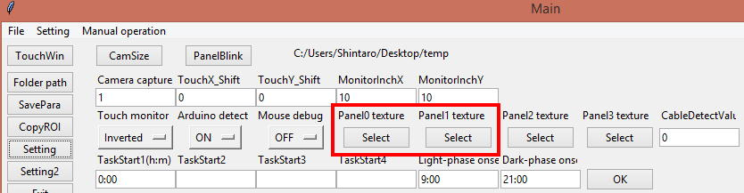

8. コードの改変 その2
前の章で最低限の機能は実現しましたが、実際に使ってみるとまだまだ不足を感じると思います。
そこでここでは課題91にさらに以下の4つの機能を付け加えた課題92を作成して行きます。
・点滅パネルやユーザーが用意した画像をパネルとして表示
・水手がかりLEDの点滅機能
・課題後に正解数が上限に達せず飲水量が不足した場合に、不足分を補うための自動給水機能
・課題後正解率が一定値を超えたら別の課題に切り替える機能
def Task92(): # Test task 3
global Phase
Phase0_Init = 0
Phase1_Init = 0
Phase2_Init = 0
while EndFlag == 0:
OperantHouseUpdate() # Run house keeping function (This must be executed once per frame)
if GetBackButtonStat()==1: # If "Back" button is clicked
break # Back to the task select phase
if Phase == 0: # Parameter inputs
if Phase0_Init == 0: # Make GUI for the setting of the parameters for this task
RemoveMainRightWidget() # Remove task buttons
PutStartBackButton() # Put "start" and "back" buttons
ColumnWidth = 14 # Width of input columns
Row = 0
Column = 0
mMaxCorrectNum = ttk.Label(MainWindowRightFrame, text='MaxCorrectNum', width=ColumnWidth).grid(row=Row, column=Column, sticky=W) # Put label
MaxCorrectNumVar = IntVar(MainWindowRoot) # Declare a variable for input column
iMaxCorrectNum = ttk.Entry(MainWindowRightFrame, textvariable=MaxCorrectNumVar, width=ColumnWidth).grid(row=Row + 1, column=Column) # Create inputcolumn and link it with the variable
Column += 1
mMaxTrialNum = ttk.Label(MainWindowRightFrame, text='MaxTrialNum', width=ColumnWidth).grid(row=Row, column=Column, sticky=W)
MaxTrialNumVar = IntVar(MainWindowRoot) # Declare a variable for input column
iMaxTrialNum = ttk.Entry(MainWindowRightFrame, textvariable=MaxTrialNumVar, width=ColumnWidth).grid(row=Row + 1, column=Column)
Column += 1
mTimeLimit = ttk.Label(MainWindowRightFrame, text='TimeLimit(min)', width=ColumnWidth).grid(row=Row, column=Column, sticky=W)
TimeLimitVar = IntVar(MainWindowRoot)
iTimeLimit = ttk.Entry(MainWindowRightFrame, textvariable=TimeLimitVar, width=ColumnWidth).grid(row=Row + 1, column=Column)
Column += 1
mPunishDur = ttk.Label(MainWindowRightFrame, text='PunishDur(s)', width=ColumnWidth).grid(row=Row, column=Column, sticky=W)
PunishDurVar = IntVar(MainWindowRoot)
iPunishDur = ttk.Entry(MainWindowRightFrame, textvariable=PunishDurVar, width=ColumnWidth).grid(row=Row + 1, column=Column)
Column += 1
mLickDur = ttk.Label(MainWindowRightFrame, text='LickDur(s)', width=ColumnWidth).grid(row=Row, column=Column, sticky=W)
LickDurVar = IntVar(MainWindowRoot)
iLickDur = ttk.Entry(MainWindowRightFrame, textvariable=LickDurVar, width=ColumnWidth).grid(row=Row + 1, column=Column)
Column += 1
今までは入力欄をそれぞれグリッド座標を指定して配置していましたが、それだと後から入力欄を追加・削除した際に他の欄の座標も直さなければならず不便なのでRaw, Column変数を作成し、それらの値を使い入力欄を配置するようにします。
mNextTask = ttk.Label(MainWindowRightFrame, text='NextTask#', width=ColumnWidth).grid(row=Row, column=Column, sticky=W) # The task number indicated herewill be the next task if the correct rate exceeds "NextTaskTh"
NextTaskVar = IntVar(MainWindowRoot)
iNextTask = ttk.Entry(MainWindowRightFrame, textvariable=NextTaskVar, width=ColumnWidth).grid(row=Row + 1, column=Column)
Column += 1
mNextTaskTh = ttk.Label(MainWindowRightFrame, text='NextTaskTh%', width=ColumnWidth).grid(row=Row, column=Column, sticky=W) # Correct rate threshold toswitch to the next task
NextTaskThVar = IntVar(MainWindowRoot)
iNextTaskTh = ttk.Entry(MainWindowRightFrame, textvariable=NextTaskThVar, width=ColumnWidth).grid(row=Row + 1, column=Column)
新しい課題パラメータの入力欄を追加します。
Row += 2 # Begin a new line
Column = 0
パラメータ数が多いのでここで改行します。
mPanelType = ttk.Label(MainWindowRightFrame, text='PanelType', width=ColumnWidth).grid(row=Row, column=Column, sticky=W) # Type of panel, Normal: whiterectangle panel, Blink: white rectangle bilnking panel, Textured: User custom image (Can be upload at "MainWindow -> Setting -> Panel* texture")
PanelTypeVar = StringVar(MainWindowRightFrame)
tPanelType = OptionMenu(MainWindowRightFrame, PanelTypeVar, "Normal", "Blink", "Textured").grid(row=Row + 1, column=Column, sticky=W)
Column += 1
mWaterCueType = ttk.Label(MainWindowRightFrame, text='WaterCueType', width=ColumnWidth).grid(row=Row, column=Column, sticky=W) # If chose blink, rewardcue will blink
WaterCueTypeVar = StringVar(MainWindowRightFrame)
tWaterCueType = OptionMenu(MainWindowRightFrame, WaterCueTypeVar, "Normal", "Blink").grid(row=Row + 1, column=Column, sticky=W)
Column += 1
mAwsOn = ttk.Label(MainWindowRightFrame, text='AWS', width=ColumnWidth).grid(row=Row, column=Column, sticky=W) # If ON, complemental water supply isapplied after end of each session
AwsOnVar = StringVar(MainWindowRoot)
tAwsOn = OptionMenu(MainWindowRightFrame, AwsOnVar, "ON", "OFF").grid(row=Row + 1, column=Column, sticky=W)
ここではドロップダウン方式の入力欄(OptionMenu)を作成します。選択肢は"Normal", "Blink", "Textured"のように文字列を書いて追加する事が出来、実行中に選択した文字列がPanelTypeVarへ代入されます。
Str = "ParametersForTask" + str(GetTaskID())
if os.path.exists(Str + '/MaxCorrectNum.dat') == True: # If save file named "MaxCorrectNum.dat" exist:
with open(Str + '/MaxCorrectNum.dat', 'rb') as PickleInst[GetTaskID()]:
MaxCorrectNumVar.set(pickle.load(PickleInst[GetTaskID()])) # Substitute loaded data into the variable of this program
else: # If save file doesn't exist
MaxCorrectNumVar.set(80) # Substitute 80 into the variable
if os.path.exists(Str + '/MaxTrialNum.dat') == True:
with open(Str + '/MaxTrialNum.dat', 'rb') as PickleInst[GetTaskID()]:
MaxTrialNumVar.set(pickle.load(PickleInst[GetTaskID()]))
else:
MaxTrialNumVar.set(110)
if os.path.exists(Str + '/TimeLimit.dat') == True:
with open(Str + '/TimeLimit.dat', 'rb') as PickleInst[GetTaskID()]:
TimeLimitVar.set(pickle.load(PickleInst[GetTaskID()]))
else:
TimeLimitVar.set(600)
if os.path.exists(Str + '/PunishDur.dat') == True:
with open(Str + '/PunishDur.dat', 'rb') as PickleInst[GetTaskID()]:
PunishDurVar.set(pickle.load(PickleInst[GetTaskID()]))
else:
PunishDurVar.set(10)
if os.path.exists(Str + '/LickDur.dat') == True:
with open(Str + '/LickDur.dat', 'rb') as PickleInst[GetTaskID()]:
LickDurVar.set(pickle.load(PickleInst[GetTaskID()]))
else:
LickDurVar.set(2)
if os.path.exists(Str + '/NextTask.dat') == True:
with open(Str + '/NextTask.dat', 'rb') as PickleInst[GetTaskID()]:
NextTaskVar.set(pickle.load(PickleInst[GetTaskID()])) # Load
else:
NextTaskVar.set(4) # Default value
if os.path.exists(Str + '/NextTaskTh.dat') == True:
with open(Str + '/NextTaskTh.dat', 'rb') as PickleInst[GetTaskID()]:
NextTaskThVar.set(pickle.load(PickleInst[GetTaskID()])) # Load
else:
NextTaskThVar.set(80) # Default value
if os.path.exists(Str + '/PanelType.dat') == True:
with open(Str + '/PanelType.dat', 'rb') as PickleInst[GetTaskID()]:
PanelTypeVar.set(pickle.load(PickleInst[GetTaskID()])) # Load
else:
PanelTypeVar.set('Blink') # Default value
if os.path.exists(Str + '/WaterCueType.dat') == True:
with open(Str + '/WaterCueType.dat', 'rb') as PickleInst[GetTaskID()]:
WaterCueTypeVar.set(pickle.load(PickleInst[GetTaskID()])) # Load
else:
WaterCueTypeVar.set('Blink') # Default value
if os.path.exists(Str + '/AwsOn.dat') == True:
with open(Str + '/AwsOn.dat', 'rb') as PickleInst[GetTaskID()]:
AwsOnVar.set(pickle.load(PickleInst[GetTaskID()])) # Load
else:
AwsOnVar.set('ON') # Default value
新パラメータのロード処理を追加
PutRoiGui(0, 1, 1, 0) # Put setting GUI of the indicated ROI on ROI window (ROI number, Detection mode, Threshold direction, ShowSymbol or not)
PutRoiGui(1, 1, 1, 0)
PutRoiGui(19, 0, 0, 1)
RemoveAllDigitalOutGui() # Remove all GUIs on the Digital out window
PutDigitalOutGui(10) # Put the digital output GUI for channel 10 on Digital ouput window
PutDigitalOutGui(12)
PutDigitalOutGui(13)
RemoveAllServoGui() # Remove all GUI on the Servo GUI
PutServoGui(3) # Put a servo GUI for channel 3 on the Servo GUI
Phase0_Init = 1 # Set a flag which indicating phase0 initialization has done
if GetSaveTrgStat() == 1: # If save trigger is activated
# Parameters will be saved into a folder named "ParametersForTask90"
Str="ParametersForTask"+str(GetTaskID()) # Substitute save folder path
if os.path.exists(Str) == False: # If save folder doesn't exist
os.mkdir(Str) # Create the folder
with open(Str+'/MaxCorrectNum.dat', 'wb') as PickleInst[GetTaskID()]:
pickle.dump(MaxCorrectNumVar.get(),PickleInst[GetTaskID()]) # Save a value of "MaxCorrectNumVar" as "MaxCorrectNum.dat" file
with open(Str+'/MaxTrialNum.dat', 'wb') as PickleInst[GetTaskID()]:
pickle.dump(MaxTrialNumVar.get(),PickleInst[GetTaskID()])
with open(Str+'/TimeLimit.dat', 'wb') as PickleInst[GetTaskID()]:
pickle.dump(TimeLimitVar.get(),PickleInst[GetTaskID()])
with open(Str+'/PunishDur.dat', 'wb') as PickleInst[GetTaskID()]:
pickle.dump(PunishDurVar.get(), PickleInst[GetTaskID()])
with open(Str+'/LickDur.dat', 'wb') as PickleInst[GetTaskID()]:
pickle.dump(LickDurVar.get(), PickleInst[GetTaskID()])
with open(Str + '/NextTask.dat', 'wb') as PickleInst[GetTaskID()]:
pickle.dump(NextTaskVar.get(), PickleInst[GetTaskID()])
with open(Str+'/NextTaskTh.dat', 'wb') as PickleInst[GetTaskID()]:
pickle.dump(NextTaskThVar.get(), PickleInst[GetTaskID()])
with open(Str+'/PanelType.dat', 'wb') as PickleInst[GetTaskID()]:
pickle.dump(PanelTypeVar.get(), PickleInst[GetTaskID()])
with open(Str+'/WaterCueType.dat', 'wb') as PickleInst[GetTaskID()]:
pickle.dump(WaterCueTypeVar.get(), PickleInst[GetTaskID()])
with open(Str+'/AwsOn.dat', 'wb') as PickleInst[GetTaskID()]:
pickle.dump(AwsOnVar.get(), PickleInst[GetTaskID()])
新パラメータの保存処理追加
if Phase == 1: # Waiting phase (Task will start when the set time arrives)
if Phase1_Init == 0: # If the initialization for phase1 has not done
PutPreTaskButton() # Put "StartNow" and "Back" button on Main window
mStatusVar = StringVar(MainWindowRoot) # Create a variable for status display
mStatus = ttk.Label(MainWindowRightFrame, textvariable=mStatusVar) # Create label object and link it with Main window
mStatus.place(x=10, y=0) # Place label object on the Main window
mOngoingResultVar = StringVar(MainWindowRoot) # Create a variable for progress display
Phase1_Init = 1 # Flat that phase1 has done
mStatusVar.set('Test2 task (' + str(GetTaskID()) + ') Waiting...') # Show current status of the Operant House
if IsStartTime() == 1: # Check whether task start time arrives
StartNow() # Start task (Phase number will be "2")
if Phase == 2: # If it is during task
if Phase2_Init == 0: # Initialization of the task
PutEndTaskNowButton() # Put "TaskEnd" button on Main window
mStatusVar.set('Test2 task (' + str(GetTaskID()) + ') Start time ' + str(TaskStartedMonth) + '/' + str(TaskStartedDay) + ' ' + str(TaskStartedHour) + ':' + str(TaskStartedMinute) + ' Running') # Substitute latest information about current task into "mStatusVar"
mOngoingResult = ttk.Label(MainWindowRightFrame, textvariable=mOngoingResultVar)
mOngoingResult.place(x=10, y=18)
# Substitute task parameter values in StringVars into integer or string variable (to make the cord easeir to read)
MaxCorrectNum = int(MaxCorrectNumVar.get()) # Get the value of "MaxCorrectNumVar" and convert it from string to integer and substitute into variable named"MaxCorrectNum"
MaxTrialNum = int(MaxTrialNumVar.get())
TimeLimit = int(TimeLimitVar.get())
PunishDur = int(PunishDurVar.get())
LickDur = int(LickDurVar.get())
NextTask = int(NextTaskVar.get())
NextTaskTh = int(NextTaskThVar.get())
PanelType = PanelTypeVar.get()
WaterCueType = WaterCueTypeVar.get()
AwsOn = AwsOnVar.get()
新パラメータ用の変数を追加し、代入します。
# Declar local variables for this task
TrialNum = 0 # Current trial number
CorrectNum = 0 # Current correct trial number
IncorrectNum = 0 # Current incorrect trial number
CorrectRate = 0.0 # Current correct rate
TaskDur = 0 # This will keep the elapsed time during of task
NowDrinking = 0 # Use as trigger
CorrectPanelID = 0 # ID number of current correct panel (0 or 1)
AWS_Latency = 20 # Latency to start AWS (sec)
セッション終了してから補完給水(AWS)を始めるまでの時間をここで指定する変数を追加
StartRecording() # Start camera capture / TTL signal output
StartLickRecording() # Start an entry of lick log
LightCycleControlOff() # Deactivate automatic Light/Dark cycle illumination
RoofLightOff() # Turn off the lights on roof (Digital output Ch13)
InfraredLightOn() # Turn on the infrared LED illumination (Digital output Ch12)
if WaterCueType == 'Normal':
DigitalOutOn(10) # Turn on cue LED connected to Ch10
if WaterCueType == 'Blink':
DigitalOutBlinkOn(10) # Start blinking of cue LED connected to Ch10
ServoPosInside(3) # Change the angle of water arm servo connected to Ch3 to inside position
WaterCueTypeはNormalの場合は通常の点灯 "DigitalOutOn()"、Blinkの場合は点滅を開始するコマンド "DigitalOutBlinkOn()"を追加
if PanelType == 'Normal':
CreateNormalPanel(0) # Create a white-filled square panel as panel #0
CreateNormalPanel(1)
if PanelType == 'Blink':
CreateBlinkPanel(0) # Create a white-filled square blinking panel #0
CreateBlinkPanel(1)
if PanelType == 'Textured':
CreateTexturedPanel(0,0) # Create a user uploaded image panel #0
CreateTexturedPanel(1,0)
パネルの種類もBlinkなら点滅するパネルをCreateBlinkPanel()で作成、TexturedならCreateTexturedPanel()で作成します。なおCreateTexturedPanelの2番目の引き数はテクスチャ番号です。
Texturedパネルで表示されるイメージ(PNG形式)はSettingで登録する事が出来ます(サンプル画像はOperantHouseフォルダ―にあるTexturesフォルダの中にあります)。
今回は0番のテクスチャを使うのでTexture #0にイメージファイルを登録してください。

Writer_TouchEventTxt = open(Path + "/" + str(TimeNow.year) + "_" + str(TimeNow.month) + "_" + str(TimeNow.day) + " " + str(TimeNow.hour) + "h" + str(TimeNow.minute) + "m Task" + str(GetTaskID()) + " Touch.txt", 'w') # Initialize the text exporter for a result file
Writer_TouchEventTxt.write('TrialNum\tResult\t\t\tyyyy/mm/dd\th:m\ts\n') # Write item name on the result file
Writer_TouchEventCsv = open(Path + "/" + str(TimeNow.year) + "_" + str(TimeNow.month) + "_" + str(TimeNow.day) + " " + str(TimeNow.hour) + "h" + str(TimeNow.minute) + "m Task" + str(GetTaskID()) + " Touch.csv", 'w')
print("Task #" + str(GetTaskID()) + " is started at " + str(GetTaskStartedMonth()) + '/' + str(GetTaskStartedDay()) + ' ' + str(GetTaskStartedHour()) + ':' + str(GetTaskStartedMinute()) + ':' + str(GetTaskStartedSecond())) # Enter the start time in the console window of Pycharm
Timer_Start(5) # Start a timer #5 to measure the duration of the task
Phase2 = 2 # Start task from the reward phase
Phase2_Init = 1 # Flag indicating that initialization of Phase2 has done
if Phase2 == 0: # Initiation of new trial
TaskDur = Timer_GetSec(5)
CorrectPanelID = int(random.random()*2) # Determine which panel will be assigned as "correct"
print('CorrectPanelID: ' + str(CorrectPanelID))
ShowPanel(CorrectPanelID) # Display panel #0
Phase2 = 1
if Phase2 == 1: # Panel presentation
TouchedPanelID = DetectRoiNosepoke() # Examine which panel is touched (return panel ID. If none of the panels touched, return -1)
if TouchedPanelID != -1 and TouchedPanelID != 19: # If mouse touches the panel
TrialNum += 1
if TouchedPanelID == CorrectPanelID: # If touched panel is assigned as correct
ServoPosInside(3) # Move the water nozzle into inside position
if WaterCueType == 'Normal':
DigitalOutOn(10) # Turn on cue LED connected to Ch10
if WaterCueType == 'Blink':
DigitalOutBlinkOn(10) # Start blinking of cue LED connected to Ch10
HidePanel(0) # Turn off panel #0
HidePanel(1) # Turn off panel #1
NowDrinking = 0
CorrectNum += 1 # Increase the number of correct response
Writer_TouchEventTxt.write(str(TrialNum)+'\tPanelTouched(Correct)\t'+ str(TimeNow.year)+"/"+str(TimeNow.month)+"/"+str(TimeNow.day)+"\t"+str(TimeNow.hour)+":"+str(TimeNow.minute)+"\t"+str(TimeNow.second)+"."+str(TimeNow.microsecond//1000)+"\n") # Write the response on the text file
Writer_TouchEventCsv.write(str(TrialNum) + ',1,' + str(TimeNow.year) + "," + str(TimeNow.month) + "," + str(TimeNow.day) + "," + str(TimeNow.hour) + "," +str(TimeNow.minute) + "," + str(TimeNow.second) + "." + str(TimeNow.microsecond//1000)+"\n") # Write the response on the csv file
Phase2 = 2 # Start reward phase
if TouchedPanelID != CorrectPanelID: # If touched panel is assigned as incorrect
ServoPosOutside(3) # Move the water nozzle into inside position
HidePanel(0)
HidePanel(1)
RoofLightOn() # Turn on the ceiling illumination
IncorrectNum += 1 # Increase the number of correct response
Writer_TouchEventTxt.write(str(TrialNum)+'\tPanelTouched(Incorrect)\t'+ str(TimeNow.year)+"/"+str(TimeNow.month)+"/"+str(TimeNow.day)+"\t"+str(TimeNow.hour)+":"+str(TimeNow.minute)+"\t"+str(TimeNow.second)+"."+str(TimeNow.microsecond//1000)+"\n") # Write the response on the text file
Writer_TouchEventCsv.write(str(TrialNum) + ',2,' + str(TimeNow.year) + "," + str(TimeNow.month) + "," + str(TimeNow.day) + "," + str(TimeNow.hour) + "," +str(TimeNow.minute) + "," + str(TimeNow.second) + "." + str(TimeNow.microsecond//1000)+"\n") # Write the response on the csv file
Timer_Start(0) # Start punishment timer
Phase2 = 3 # Start punish phase
mOngoingResultVar.set('CorrectNum: ' + str(CorrectNum) + ' IncorrectNum: ' + str(IncorrectNum) + ' TrialNum: ' + str(TrialNum))
if Timer_GetSec(5) >= TimeLimit * 60: # If time limit of the task comes
TaskDur = Timer_GetSec(5)
print("Time limit elapsed")
Timer_End(5) # Stop the timer
Phase2 = 5
if Phase2 == 2: # Reward phase
if DetectRoiNosepoke() == 19 and NowDrinking == 0: # If the mouse initiates nose poking
NowDrinking = 1
Timer_Start(0) # Start lick timer
if NowDrinking == 1: # If the nose poke has begun
if Timer_GetSec(0) >= LickDur: # If the nosepoke duration exceeds the lick duration
Timer_End(0) # End timer for measuring lick duration
ServoPosMiddle(3) # Move water nozzle back to the middle position
DigitalOutOff(10) # Turn off the cue LED
NowDrinking = 0
Phase2 = 4 # Go to After trial phase
if Phase2 == 3: # Punishment phase
if Timer_GetSec(0) >= PunishDur: # If punishment time is passed
Timer_End(0) # End punishment timer1
RoofLightOff()
ServoPosMiddle(3) # Move water nozzle to the intermediate position
Phase2 = 4 # Go to After trial phase
if Phase2 == 4: # After trial phase
if CorrectNum < MaxCorrectNum and TrialNum < MaxTrialNum: # If the touch number doesn't exceed the maximum number
Phase2 = 0
if CorrectNum >= MaxCorrectNum or TrialNum >= MaxTrialNum: # If the touch number exceeds the maximum number
TaskDur = Timer_GetSec(5) # Keep the task time
Phase2 = 5
補完給水を実装するためPhase2=5,6,7を追加します。
if Phase2 == 5: # Determine whether AWS will be applied or not
HideAllPanel()
if CorrectNum < MaxCorrectNum and AwsOn == 'ON': # If mouse didn't achieved the max correct response
Timer_Start(0)
Phase2 = 6
if CorrectNum == MaxCorrectNum or AwsOn == 'OFF': # If mouse achieved the max correct response
Phase2 = -1
Phase2=5では補完給水を実行するべきか判断します。AWSが課題パラメータでONになっており、かつ正解数が最大正解数に達していない(=体重維持に最低限必要な飲水が出来てない)場合のみ、AWSフェーズであるPhase2=6,7へ移行させます。
if Phase2 == 6: # Wait until complemental water supply is started
if Timer_GetSec(0) >= AWS_Latency: # If it past indicated latency to start complemental water supply
Timer_End(0)
ArbitaryWaterSupplyDur = (MaxCorrectNum - CorrectNum) * LickDur * 1000 # Calculate the duration of complemental water supply
if WaterCueType == 'Normal':
StartArbitaryWaterSupply(3, 10, 0, ArbitaryWaterSupplyDur) # Start complemental water supply
if WaterCueType == 'Blink':
StartArbitaryWaterSupply(3, 10, 1, ArbitaryWaterSupplyDur)
print("Arbitrary water supply start")
Phase2 = 7 # Start AWS
セッション終了直後にいきなり補完給水が始まるとマウスが混乱する恐れがあるのでPhase2=6ではAWS_Latencyで指定した時間待機させます。
もし指定時間待機したら、給水時間を不足した正解数から計算しArbitaryWaterSupplyDurへ代入します。
その後StartArbitaryWaterSupply()を実行して、AWSを開始します。なおこの関数の引数は以下の通りです。
StartArbitaryWaterSupply(給水アームのサーボに接続されたチャネル#, 報酬Cueのチャネル#, 報酬Cueを点滅させる場合は1そうでなけらば0, 給水時間(msec))
if Phase2 == 7: # Keep checking until complemental water supply is finished
if GetArbitaryWaterSupplyStat() == 1: # If the complemental water supply is finished
Phase2 = -1
Phase2=7ではAWSの終了待ちフェーズです。
AWSが終わってからGetArbitaryWaterSupplyStat()を実行すると1が返って来るので(終わっていない場合は0)、毎フレームGetArbitaryWaterSupplyStat()を実行し、1が返ったらセッション終了フェーズへ移行します。
if Phase2 == -1 or GetEndTaskNowButtonStat() == 1: # If the flag is set to finish the task
LightCycleControlOn() # Activate automatic light/dark cycle
ServoPosMiddle(3) # Moze servo nozzle into middle position
DeleteAllPanel() # Remove a panel on touch screen
InfraredLightOff() # Turn off the infrared LED
if GetRecordingStat() == 1: # If camera is capturing
SetEndRecordingTimer(60) # Onset a timer to finish video recording after 60 frames (correspond about 2sec) from now
# Add summary of results into the result file
if CorrectNum > 0 or IncorrectNum > 0:
CorrectRate = int(CorrectNum * 100.0 / TrialNum)
Writer_TouchEventTxt.write('TotalNum:' + str(TrialNum) + ' CorrectNum:' + str(CorrectNum) + ' IncorrectNum:' + str(IncorrectNum) + ' CorrectRate:' + str(CorrectRate) + '%\n')
Writer_TouchEventTxt.write('SessionStartTime: ' + str(GetTaskStartedMonth()) + '/' + str(GetTaskStartedDay()) + ' ' + str(GetTaskStartedHour()) + ':' + str(GetTaskStartedMinute()) + ':' + str(GetTaskStartedSecond()) + "\n")
Writer_TouchEventTxt.write('SessionEndTime: ' + str(TimeNow.month) + '/' + str(TimeNow.day) + ' ' + str(TimeNow.hour) + ':' + str(TimeNow.minute) + ':' + str(TimeNow.second + (TimeNow.microsecond // 1000) / 1000) + "\n")
Writer_TouchEventTxt.write('TaskDuration(sec): ' + str(TaskDur) + "\n")
# Add experimental conditions into the result file
Writer_TouchEventTxt.write('MaxCorrectNum: '+str(MaxCorrectNum)+"\n")
Writer_TouchEventTxt.write('MaxTrialNum: ' + str(MaxTrialNum) + "\n")
Writer_TouchEventTxt.write('TimeLimit: ' + str(TimeLimit) + "\n")
Writer_TouchEventTxt.write('PunishDur: ' + str(TimeLimit) + "\n")
Writer_TouchEventTxt.write('LickDur: ' + str(LickDur)+"\n")
Writer_TouchEventTxt.write('NextTask: ' + str(NextTask)+"\n")
Writer_TouchEventTxt.write('NextTaskTh: ' + str(NextTaskTh)+"\n")
Writer_TouchEventTxt.write('PanelType: ' + PanelType+"\n")
Writer_TouchEventTxt.write('WaterCueType: ' + WaterCueType+"\n")
Writer_TouchEventTxt.write('AwsOn: ' + AwsOn+"\n")
新しい課題パラメータの値を結果ファイルへ出力
Writer_TouchEventTxt.write('RecordFPS: ' + str(GetRecordFps()) + "\n") # Recorded frame number per second
Writer_TouchEventTxt.write(GetRoiSensitivity() + "\n") # Settings of each ROI
Writer_TouchEventTxt.write(GetServoAngle() + "\n") # Set angles of each servo
Writer_TouchEventTxt.close() # Close the text exporter for the result file
Writer_TouchEventCsv.close()
EndLickRecording() # End lick log recording
SendMail(DeviceNameVar.get()+' finished task '+str(GetTaskID())+'. TrialNum:'+str(TrialNum)+' Correct:'+str(CorrectNum)+' Incorrect:'+str(IncorrectNum)+' Rate:'+str(CorrectRate)+'% Dur:'+str(round(Timer_GetSec(5) / 60,1))+' min','The task is finished.') # Send a email (correct number and task duration are added to email title)
if IsHousingAnalysis == 1 and Phase2 == -1: # If it is housing analysis
if CorrectRate >= NextTaskTh: # If the score exceed the criteria to switch to the next task
SwitchTask(NextTask) # Onset the task switching trigger
print("Task was switched to task#" + str(NextTask) + " " + str(GetTaskStartedMonth()) + '/' + str(GetTaskStartedDay()) + ' ' + str(GetTaskStartedHour()) + ':' + str(GetTaskStartedMinute()) + ':' + str(GetTaskStartedSecond()))
最後に正答率(CorrectRate)が閾値(NextTaskTh)を超えた場合、NextTaskで指定した課題へ切り替える処理を追加します。
この機能は飼育解析モード(IsHousingAnalysis == 1)でかつ"EndTask"ボタンが押された場合でない時のみ実行されます。
if IsHousingAnalysis == 0:
RoofLightOn()
飼育解析モードでなければセッションが終了した事をマウスに知らせるため天井照明をオンにします。
Phase = 1 # Go back to the task-waiting phase
Phase2 = 0
Phase2_Init = 0
SetDispVariable(0, 'Phase2', str(Phase2)) # Display "Phase2" value on the bottom of main window
return
以上の機能を加えれば十分実用的になると思います。